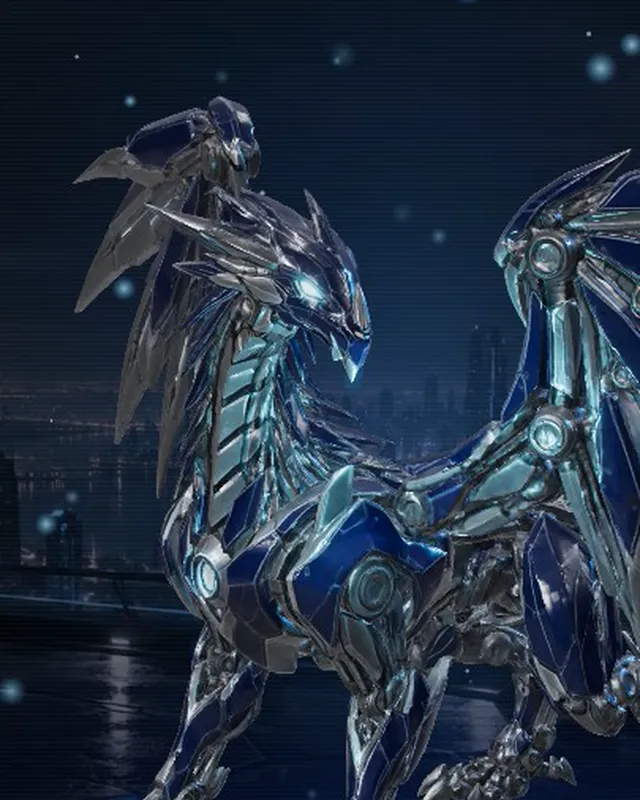
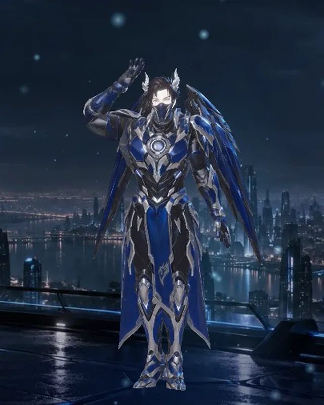
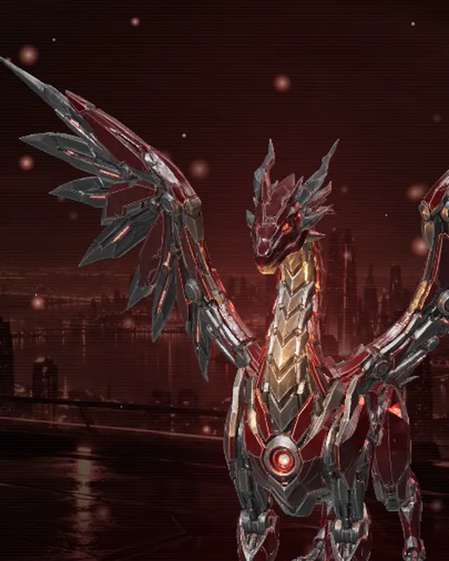
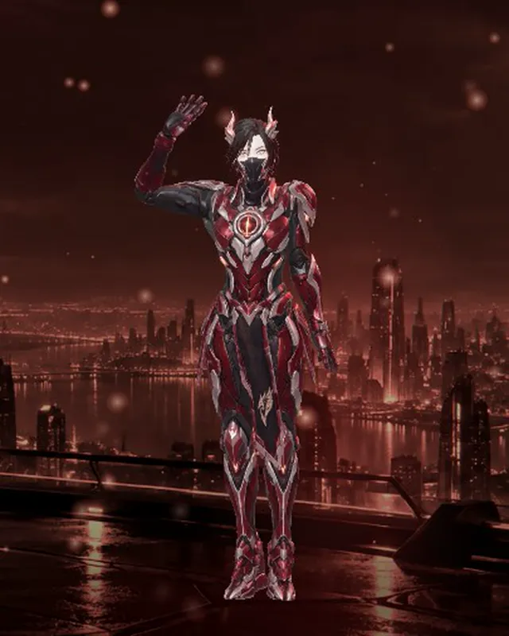

AERYX
Midnight titanium, a cyan core. The original. Tap the core and he tears out of it.
BETA · OPEN SOURCE · LOCAL FIRST · AGPL-3.0
Aeryx is an AI assistant with a live 3D body. It runs on the model you choose, local or cloud, keeps its own memory on your disk, and anything that matters waits for your yes.
BETA Still in active development, so expect rough edges. Found one? Report a bug · Send feedback
ONE MIND · TWO DRAGONS
Same brain, same memory, same chain. Pick a dragon and the whole app changes colour with it. Each has three forms: a core, a dragon and a humanoid.


Midnight titanium, a cyan core. The original. Tap the core and he tears out of it.


Crimson armour, an amber core. Switch to her and every screen turns red.
WHAT IT DOES
Tell it what's on and it lays out the day, in plain language.
Ask for something recurring and it proposes a workflow: a schedule, a purpose, and nothing armed yet.
Proposals wait in the Chain. Press and hold to approve; reject and nothing happened.
Headlines from public feeds, mapped on a globe you can spin, filtered by region.
Its memory is plain files on your disk. Read it, edit it, delete it. Nothing hidden.
Tap Aeryx or Aeri and the theme, the character and every label follow. Add more with skin packs.
THE SAFETY LAYER
Every tool call is classified before it runs and written to a hash-linked, append-only log. Standing permissions are replayed from that log, so a broken chain voids every grant.
Looking is free.
Inside your workspace, it just gets on with it.
Anything outward, destructive or outside your folders.
Changing Aeryx himself needs more than a click.
YOUR BRAIN, YOUR CHOICE
An Ollama model on your machine. Your asks never leave it.
Your Claude Code login or an Anthropic key. The reference path.
One key, many models, over an Anthropic-compatible endpoint.
OpenAI's Codex models, over OpenRouter.
Keys live in the macOS Keychain, Windows DPAPI, or a 0600 file on Linux. Never in the config. No telemetry, no account.
IN PROGRESS
These exist and are being hardened. They'll ship in a later release.
A faster brain layer that answers the obvious instantly and gets quicker the more you use it.
Proposing changes to itself and learning new skills, landed only on your approval.
Hands on the screen: see, point, click and type, every act shown first.
ONE LINE
It brings its own Node, needs no admin rights, and removes cleanly with aeryx uninstall. It opens at http://127.0.0.1:23799/lair/; connect a model and you're in.
Same Aeryx, no terminal: a window, a tray and a floating orb. Not code-signed yet, so the first launch shows an "unverified developer" warning; here's how to open it. Or, for developers:
curl -fsSL https://dracoder.github.io/aery-ai/install.sh | shirm https://dracoder.github.io/aery-ai/install.ps1 | iexVoice is Windows-only for now. Read the installer first if you like. Something wrong? Report a bug.